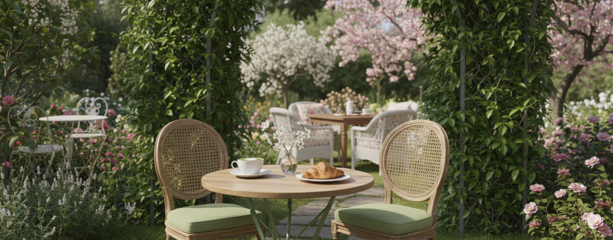

Reserve Your Table
Choose a green table to book your spot. Reserved tables are gray 🍃
🌿 Garden Whisk Café
Enjoy a moment of calm in our garden-inspired café. Choose your table and let the aroma of matcha and coffee welcome you.
🪑 Green tables are available.
☕ Gray tables are reserved.
💬 Simply click your preferred table and confirm your name.
💌 Walk-ins are welcome!
📞 Contact us: 0912 345 6789
🕒 Open daily: 9AM – 9PM
